สกิลตามอาชีพ
มือใหม่
ไม่มีสกิลของตัวเอง
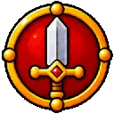
นักรบ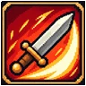
ฟันหนัก เลเวลสูงสุด 10ฟันเต็มแรงใส่ศัตรู 1 ตัว
| Lv | SP | ดาเมจ % |
|---|---|---|
| 1 | 8 | 130 |
| 2 | 8 | 160 |
| 3 | 8 | 190 |
| 4 | 8 | 220 |
| 5 | 8 | 250 |
| 6 | 15 | 280 |
| 7 | 15 | 310 |
| 8 | 15 | 340 |
| 9 | 15 | 370 |
| 10 | 15 | 400 |
ฝึกดาบมือเดียวกับมีดจนชำนาญ ATK เพิ่ม (เฉพาะตอนถือดาบมือเดียวหรือมีด)
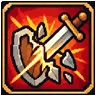
เชี่ยวชาญดาบสองมือ เลเวลสูงสุด 10ฝึกดาบสองมือจนชำนาญ ATK เพิ่ม (เฉพาะตอนถือดาบสองมือ)
ต้องเรียนก่อน: เชี่ยวชาญดาบ Lv1
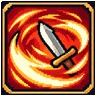
ระเบิดเพลิงดาบ เลเวลสูงสุด 10 · ธาตุไฟ · คูลดาวน์ 2 วิฟาดดาบลงพื้นเกิดระเบิดเพลิงรอบตัว 2 ช่อง ธาตุไฟ มอนที่โดนกระเด็นถอยไป 2 ช่อง (ไม่ผลักบอส)
ต้องเรียนก่อน: ฟันหนัก Lv5
| Lv | SP | ดาเมจ % |
|---|---|---|
| 1 | 30 | 120 |
| 2 | 30 | 140 |
| 3 | 30 | 160 |
| 4 | 30 | 180 |
| 5 | 30 | 200 |
| 6 | 30 | 220 |
| 7 | 30 | 240 |
| 8 | 30 | 260 |
| 9 | 30 | 280 |
| 10 | 30 | 300 |
ยั่วยุศัตรู 1 ตัวให้หันมาตีเรา ป้องกันของมันลด 10-55% แต่มันตีแรงขึ้น 5-32% นาน 30 วิ (บอสและพวกอันเดดไม่หลงกล)
ต้องเรียนก่อน:
| Lv | SP |
|---|---|
| 1 | 4 |
| 2 | 5 |
| 3 | 6 |
| 4 | 7 |
| 5 | 8 |
| 6 | 9 |
| 7 | 10 |
| 8 | 11 |
| 9 | 12 |
| 10 | 13 |
ตั้งมั่นไม่หวั่นไหว ป้องกันเวท (MDEF) +1-10 ชั่วคราว
ต้องเรียนก่อน: ยั่วยุ Lv5
| Lv | SP | เวลา (ms) |
|---|---|---|
| 1 | 10 | 10000 |
| 2 | 10 | 13000 |
| 3 | 10 | 16000 |
| 4 | 10 | 19000 |
| 5 | 10 | 22000 |
| 6 | 10 | 25000 |
| 7 | 10 | 28000 |
| 8 | 10 | 31000 |
| 9 | 10 | 34000 |
| 10 | 10 | 37000 |
ฟื้น HP และ SP เองเร็วขึ้น (ทุก 10 วิ ตอนไม่เดิน) + ยาฟื้น HP แรงขึ้น 20% ต่อขั้น
นักแม่นธนู
ยิงลูกธนู 2 ดอกติดกันใส่ศัตรู 1 ตัว
| Lv | SP | ดาเมจ % |
|---|---|---|
| 1 | 12 | 100 |
| 2 | 12 | 110 |
| 3 | 12 | 120 |
| 4 | 12 | 130 |
| 5 | 12 | 140 |
| 6 | 12 | 150 |
| 7 | 12 | 160 |
| 8 | 12 | 170 |
| 9 | 12 | 180 |
| 10 | 12 | 190 |
ยิงธนูขึ้นฟ้าให้ตกใส่ศัตรูทุกตัวรอบเป้าหมาย
ต้องเรียนก่อน: ยิงสองดอก Lv5
| Lv | SP | ดาเมจ % |
|---|---|---|
| 1 | 15 | 160 |
| 2 | 15 | 170 |
| 3 | 15 | 180 |
| 4 | 15 | 190 |
| 5 | 15 | 200 |
| 6 | 15 | 210 |
| 7 | 15 | 220 |
| 8 | 15 | 230 |
| 9 | 15 | 240 |
| 10 | 15 | 250 |
สายตาคม DEX เพิ่ม (ยิงแรง แม่น ตีเร็วขึ้นนิดหน่อย)
มองไกลและแม่นขึ้น ระยะยิงธนูเพิ่ม และ HIT เพิ่ม
ต้องเรียนก่อน: ตาเหยี่ยว Lv3
รวมสมาธิ AGI และ DEX เพิ่ม 3-12% ชั่วคราว
ต้องเรียนก่อน: สายตาไกล Lv1
| Lv | SP | เวลา (ms) |
|---|---|---|
| 1 | 25 | 60000 |
| 2 | 30 | 80000 |
| 3 | 35 | 100000 |
| 4 | 40 | 120000 |
| 5 | 45 | 140000 |
| 6 | 50 | 160000 |
| 7 | 55 | 180000 |
| 8 | 60 | 200000 |
| 9 | 65 | 220000 |
| 10 | 70 | 240000 |
ยิงธนูแรงใส่ศัตรู 1 ตัว ผลักถอยไป 4 ช่อง (ไว้เปิดระยะ ไม่ผลักบอส)
| Lv | SP | ดาเมจ % | ร่าย (ms) | ร่ายคงที่ (ms) |
|---|---|---|---|---|
| 1 | 15 | 150 | 400 | 800 |
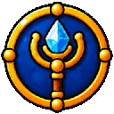
ผู้ร่ายมนตร์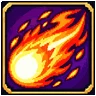
ศรไฟ เลเวลสูงสุด 10 · ธาตุไฟยิงศรไฟใส่ศัตรู 1 ตัว ยิ่งเลเวลสูงยิ่งโดนหลายดอก (ดอกละ 80%) ธาตุไฟ แรงกับมอนธาตุดิน
| Lv | SP | ดาเมจ % | ร่าย (ms) | ร่ายคงที่ (ms) |
|---|---|---|---|---|
| 1 | 12 | 100 | 500 | 300 |
| 2 | 14 | 100 | 800 | 400 |
| 3 | 16 | 100 | 1100 | 500 |
| 4 | 18 | 100 | 1400 | 600 |
| 5 | 20 | 100 | 1700 | 700 |
| 6 | 22 | 100 | 2000 | 800 |
| 7 | 24 | 100 | 2300 | 900 |
| 8 | 26 | 100 | 2600 | 1000 |
| 9 | 28 | 100 | 2900 | 1100 |
| 10 | 30 | 100 | 3200 | 1200 |
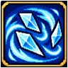
ศรน้ำแข็ง เลเวลสูงสุด 10 · ธาตุน้ำยิงศรน้ำแข็งใส่ศัตรู 1 ตัว ยิ่งเลเวลสูงยิ่งโดนหลายดอก (ดอกละ 80%) ธาตุน้ำ แรงกับมอนธาตุไฟ
| Lv | SP | ดาเมจ % | ร่าย (ms) | ร่ายคงที่ (ms) |
|---|---|---|---|---|
| 1 | 12 | 100 | 500 | 300 |
| 2 | 14 | 100 | 800 | 400 |
| 3 | 16 | 100 | 1100 | 500 |
| 4 | 18 | 100 | 1400 | 600 |
| 5 | 20 | 100 | 1700 | 700 |
| 6 | 22 | 100 | 2000 | 800 |
| 7 | 24 | 100 | 2300 | 900 |
| 8 | 26 | 100 | 2600 | 1000 |
| 9 | 28 | 100 | 2900 | 1100 |
| 10 | 30 | 100 | 3200 | 1200 |
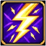
ศรสายฟ้า เลเวลสูงสุด 10 · ธาตุลมฟาดศรสายฟ้าใส่ศัตรู 1 ตัว ยิ่งเลเวลสูงยิ่งโดนหลายครั้ง (ครั้งละ 80%) ธาตุลม แรงกับมอนธาตุน้ำ
| Lv | SP | ดาเมจ % | ร่าย (ms) | ร่ายคงที่ (ms) |
|---|---|---|---|---|
| 1 | 12 | 100 | 500 | 300 |
| 2 | 14 | 100 | 800 | 400 |
| 3 | 16 | 100 | 1100 | 500 |
| 4 | 18 | 100 | 1400 | 600 |
| 5 | 20 | 100 | 1700 | 700 |
| 6 | 22 | 100 | 2000 | 800 |
| 7 | 24 | 100 | 2300 | 900 |
| 8 | 26 | 100 | 2600 | 1000 |
| 9 | 28 | 100 | 2900 | 1100 |
| 10 | 30 | 100 | 3200 | 1200 |
ยิงดวงวิญญาณใส่ศัตรู 1 ตัว (ดวงละ 100%) ธาตุผี ใช้ได้กับมอนแทบทุกธาตุ
ต้องเรียนก่อน: ลูกวิญญาณระเบิด Lv4
| Lv | SP | ดาเมจ % | ร่าย (ms) | ร่ายคงที่ (ms) |
|---|---|---|---|---|
| 1 | 18 | 100 | 400 | 100 |
| 2 | 14 | 100 | 400 | 100 |
| 3 | 24 | 100 | 400 | 100 |
| 4 | 20 | 100 | 400 | 100 |
| 5 | 30 | 100 | 400 | 100 |
| 6 | 26 | 100 | 400 | 100 |
| 7 | 36 | 100 | 400 | 100 |
| 8 | 32 | 100 | 400 | 100 |
| 9 | 42 | 100 | 400 | 100 |
| 10 | 38 | 100 | 400 | 100 |
 ลูกวิญญาณระเบิด เลเวลสูงสุด 10 · ธาตุวิญญาณ
ลูกวิญญาณระเบิด เลเวลสูงสุด 10 · ธาตุวิญญาณระเบิดพลังวิญญาณใส่เป้าและทุกตัวรอบเป้า 1 ช่อง ธาตุผี
| Lv | SP | ดาเมจ % | ร่าย (ms) | ร่ายคงที่ (ms) |
|---|---|---|---|---|
| 1 | 9 | 80 | 400 | 100 |
| 2 | 9 | 90 | 400 | 100 |
| 3 | 9 | 100 | 400 | 100 |
| 4 | 12 | 110 | 400 | 100 |
| 5 | 12 | 120 | 400 | 100 |
| 6 | 12 | 130 | 400 | 100 |
| 7 | 15 | 140 | 400 | 100 |
| 8 | 15 | 150 | 400 | 100 |
| 9 | 15 | 160 | 400 | 100 |
| 10 | 18 | 170 | 400 | 100 |
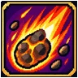
ลูกไฟระเบิด เลเวลสูงสุด 10 · ธาตุไฟยิงลูกไฟระเบิดใส่เป้า โดนทุกตัวรอบเป้า 2 ช่อง ธาตุไฟ
ต้องเรียนก่อน: ศรไฟ Lv4
| Lv | SP | ดาเมจ % | ร่าย (ms) | ร่ายคงที่ (ms) |
|---|---|---|---|---|
| 1 | 25 | 160 | 800 | 200 |
| 2 | 25 | 180 | 800 | 200 |
| 3 | 25 | 200 | 800 | 200 |
| 4 | 25 | 220 | 800 | 200 |
| 5 | 25 | 240 | 800 | 200 |
| 6 | 25 | 260 | 800 | 200 |
| 7 | 25 | 280 | 800 | 200 |
| 8 | 25 | 300 | 800 | 200 |
| 9 | 25 | 320 | 800 | 200 |
| 10 | 25 | 340 | 800 | 200 |
ส่งน้ำแข็งพุ่งไปตามพื้นใส่ศัตรู 1 ตัว ธาตุน้ำ มีโอกาสแช่แข็ง (ขยับ/ตีไม่ได้ และกลายเป็นธาตุน้ำ = ศรสายฟ้าแรงขึ้น)
ต้องเรียนก่อน: ศรน้ำแข็ง Lv5
| Lv | SP | ดาเมจ % | ร่าย (ms) | ร่ายคงที่ (ms) |
|---|---|---|---|---|
| 1 | 25 | 110 | 640 | 160 |
| 2 | 24 | 120 | 640 | 160 |
| 3 | 23 | 130 | 640 | 160 |
| 4 | 22 | 140 | 640 | 160 |
| 5 | 21 | 150 | 640 | 160 |
| 6 | 20 | 160 | 640 | 160 |
| 7 | 19 | 170 | 640 | 160 |
| 8 | 18 | 180 | 640 | 160 |
| 9 | 17 | 190 | 640 | 160 |
| 10 | 16 | 200 | 640 | 160 |
ตั้งกำแพงไฟ 3 ช่องขวางหน้า (เล็งมอน = ตั้งห่างตัว 2 ช่องทางมอน / เล็งพื้น = ตรงจุดนั้น) มอนที่เดินเข้าไฟโดนครั้งละ 50% ธาตุไฟและกระเด็นถอย ไฟแต่ละช่องดับเมื่อเผาครบจำนวน มีได้ 3 กำแพง
ต้องเรียนก่อน: ลูกไฟระเบิด Lv5
| Lv | SP | ดาเมจ % | ร่าย (ms) | ร่ายคงที่ (ms) | เวลา (ms) |
|---|---|---|---|---|---|
| 1 | 40 | 50 | 1600 | 400 | 5000 |
| 2 | 40 | 50 | 1440 | 360 | 6000 |
| 3 | 40 | 50 | 1280 | 320 | 7000 |
| 4 | 40 | 50 | 1120 | 280 | 8000 |
| 5 | 40 | 50 | 960 | 240 | 9000 |
| 6 | 40 | 50 | 880 | 220 | 10000 |
| 7 | 40 | 50 | 800 | 200 | 11000 |
| 8 | 40 | 50 | 720 | 180 | 12000 |
| 9 | 40 | 50 | 640 | 160 | 13000 |
| 10 | 40 | 50 | 560 | 140 | 14000 |
 ผนังกันภัย เลเวลสูงสุด 10
ผนังกันภัย เลเวลสูงสุด 10เสาแสงคุ้มกันใต้เท้า กันการตีประชิดของมอนที่ตีคนที่ยืนบนช่องนี้ได้จำนวนครั้ง (เดินออก = ไม่คุ้มกัน) มีได้ 2 ช่อง
ต้องเรียนก่อน: ลูกวิญญาณระเบิด Lv7, ดวงวิญญาณ Lv5
| Lv | SP | ร่าย (ms) | ร่ายคงที่ (ms) | เวลา (ms) |
|---|---|---|---|---|
| 1 | 30 | 3200 | 800 | 5000 |
| 2 | 30 | 2880 | 720 | 10000 |
| 3 | 30 | 2560 | 640 | 15000 |
| 4 | 35 | 2240 | 560 | 20000 |
| 5 | 35 | 1920 | 480 | 25000 |
| 6 | 35 | 1600 | 400 | 30000 |
| 7 | 40 | 1280 | 320 | 35000 |
| 8 | 40 | 960 | 240 | 40000 |
| 9 | 40 | 640 | 160 | 45000 |
| 10 | 40 | 320 | 80 | 50000 |
จิตใจสงบ ฟื้น SP เร็วขึ้นตลอดเวลา + ยาฟื้น SP แรงขึ้น 20% ต่อขั้น
ศิษย์วิหาร
ฟื้น HP ให้คนที่เลือก (กดแล้วคลิกตัวคน หรือชื่อในหน้าต่างปาร์ตี้) ตัวเองหรือใครก็ได้ในระยะ 9 ช่อง เลือดเต็มก็ใช้ได้ / Auto เลือกคนเลือดน้อยสุดในปาร์ตี้ให้เอง
| Lv | SP |
|---|---|
| 1 | 13 |
| 2 | 16 |
| 3 | 19 |
| 4 | 22 |
| 5 | 25 |
| 6 | 28 |
| 7 | 31 |
| 8 | 34 |
| 9 | 37 |
| 10 | 40 |
อวยพร 1 คน (กดแล้วคลิกตัวคน หรือชื่อในหน้าต่างปาร์ตี้ ระยะ 9 ช่อง) STR DEX INT เพิ่มชั่วคราว
ต้องเรียนก่อน: พรปกป้อง Lv5
| Lv | SP | เวลา (ms) |
|---|---|---|
| 1 | 28 | 60000 |
| 2 | 32 | 80000 |
| 3 | 36 | 100000 |
| 4 | 40 | 120000 |
| 5 | 44 | 140000 |
| 6 | 48 | 160000 |
| 7 | 52 | 180000 |
| 8 | 56 | 200000 |
| 9 | 60 | 220000 |
| 10 | 64 | 240000 |
เพิ่ม AGI ให้ 1 คน (กดแล้วคลิกตัวคน หรือชื่อในหน้าต่างปาร์ตี้ ระยะ 9 ช่อง) ตีเร็วขึ้น หลบเก่งขึ้น
ต้องเรียนก่อน: ฮีล Lv3
| Lv | SP | ร่าย (ms) | ร่ายคงที่ (ms) | เวลา (ms) |
|---|---|---|---|---|
| 1 | 18 | 800 | 200 | 60000 |
| 2 | 21 | 800 | 200 | 80000 |
| 3 | 24 | 800 | 200 | 100000 |
| 4 | 27 | 800 | 200 | 120000 |
| 5 | 30 | 800 | 200 | 140000 |
| 6 | 33 | 800 | 200 | 160000 |
| 7 | 36 | 800 | 200 | 180000 |
| 8 | 39 | 800 | 200 | 200000 |
| 9 | 42 | 800 | 200 | 220000 |
| 10 | 45 | 800 | 200 | 240000 |
สาปศัตรู 1 ตัว AGI ลด 3-12 (หลบยากขึ้น) และเดินช้าลง 25% นาน 40-130 วิ (ไม่ทำดาเมจ ติดไม่ติดตามโอกาส)
ต้องเรียนก่อน: เท้าเบา Lv1
| Lv | SP | ร่าย (ms) | ร่ายคงที่ (ms) |
|---|---|---|---|
| 1 | 15 | 750 | 250 |
| 2 | 17 | 750 | 250 |
| 3 | 19 | 750 | 250 |
| 4 | 21 | 750 | 250 |
| 5 | 23 | 750 | 250 |
| 6 | 25 | 750 | 250 |
| 7 | 27 | 750 | 250 |
| 8 | 29 | 750 | 250 |
| 9 | 31 | 750 | 250 |
| 10 | 33 | 750 | 250 |
 แสงศักดิ์สิทธิ์ เลเวลสูงสุด 1 · ธาตุแสง
แสงศักดิ์สิทธิ์ เลเวลสูงสุด 1 · ธาตุแสงเรียกแสงศักดิ์สิทธิ์ฟาดลงใส่ศัตรู 1 ตัว ธาตุแสง (เวท) แรงกับมอนธาตุมืด/ผีดิบ
| Lv | SP | ดาเมจ % | ร่าย (ms) | ร่ายคงที่ (ms) |
|---|---|---|---|---|
| 1 | 15 | 125 | 800 | 200 |
 พรคุ้มกาย เลเวลสูงสุด 10 · คูลดาวน์ 30 วิ
พรคุ้มกาย เลเวลสูงสุด 10 · คูลดาวน์ 30 วิตัวเองและเพื่อนในปาร์ตี้ระยะ 18 ช่อง ป้องกันจาก VIT เพิ่ม 5-50% และ HP สูงสุด +50-500
ต้องเรียนก่อน: พรปกป้อง Lv3
| Lv | SP | ร่าย (ms) | ร่ายคงที่ (ms) | เวลา (ms) |
|---|---|---|---|---|
| 1 | 23 | 350 | 150 | 30000 |
| 2 | 26 | 350 | 150 | 60000 |
| 3 | 29 | 350 | 150 | 90000 |
| 4 | 32 | 350 | 150 | 120000 |
| 5 | 35 | 350 | 150 | 150000 |
| 6 | 38 | 350 | 150 | 180000 |
| 7 | 41 | 350 | 150 | 210000 |
| 8 | 44 | 350 | 150 | 240000 |
| 9 | 47 | 350 | 150 | 270000 |
| 10 | 50 | 350 | 150 | 300000 |
ศรัทธาคุ้มกาย ดาเมจที่โดนจากมอนเผ่าผีดิบและปีศาจลดลง (ลดตรงทุกครั้งที่โดน + ตามเลเวลตัวละคร)
ATK เพิ่มเมื่อตีมอนเผ่าผีดิบและปีศาจ (+ ตามเลเวลตัวละคร)
ต้องเรียนก่อน: พรปกป้อง Lv3
วาร์ปไปจุดสุ่มในแมพเดียวกัน (หนีมอน/หาฝูงใหม่) ใช้ในห้องส่วนตัวและโซนบอสไม่ได้
| Lv | SP | เวลา (ms) |
|---|---|---|
| 1 | 10 | 0 |
| 2 | 9 | 0 |
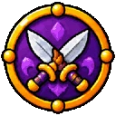
นักย่อง สาดทราย เลเวลสูงสุด 1 · ธาตุดิน
สาดทราย เลเวลสูงสุด 1 · ธาตุดินสาดทรายใส่ศัตรู 1 ตัว แรง 130% ธาตุดิน มีโอกาส 20% ทำให้ตาบอด 18 วิ (HIT/FLEE ลด 25%)
| Lv | SP | ดาเมจ % |
|---|---|---|
| 1 | 9 | 130 |
ตีธรรมดาด้วยมีดมีโอกาสตีซ้ำทันทีอีกครั้ง
 หลบหลีก เลเวลสูงสุด 10
หลบหลีก เลเวลสูงสุด 10ฝึกหลบ FLEE เพิ่ม
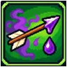
แทงพิษ เลเวลสูงสุด 10 · ธาตุพิษแทงมีดอาบพิษใส่ศัตรู 1 ตัว ธาตุพิษ มีโอกาส 14-50% ทำให้ติดพิษ 18 วิ (เลือดลดทุกวินาทีจนเหลือ 25% DEF ลด 25%)
| Lv | SP | ดาเมจ % |
|---|---|---|
| 1 | 12 | 108 |
| 2 | 12 | 115 |
| 3 | 12 | 123 |
| 4 | 12 | 130 |
| 5 | 12 | 138 |
| 6 | 12 | 145 |
| 7 | 12 | 153 |
| 8 | 12 | 160 |
| 9 | 12 | 168 |
| 10 | 12 | 175 |
 ถอยหลังพริบตา เลเวลสูงสุด 1
ถอยหลังพริบตา เลเวลสูงสุด 1กระโดดถอยหลังออกจากมอนที่ใกล้ที่สุด 5 ช่องทันที
| Lv | SP | เวลา (ms) |
|---|---|---|
| 1 | 7 | 0 |
มุดหายตัว มอนมองไม่เห็นและเลิกไล่ (คนอื่นก็ไม่เห็น) ขยับ ตี หรือใช้สกิลอื่น = ออกจากล่องหน / กดซ้ำ = ออกเอง
ต้องเรียนก่อน:
| Lv | SP | เวลา (ms) |
|---|---|---|
| 1 | 10 | 30000 |
| 2 | 10 | 60000 |
| 3 | 10 | 90000 |
| 4 | 10 | 120000 |
| 5 | 10 | 150000 |
| 6 | 10 | 180000 |
| 7 | 10 | 210000 |
| 8 | 10 | 240000 |
| 9 | 10 | 270000 |
| 10 | 10 | 300000 |
พ่อค้าเร่
ฟาดด้วยถุงทองเต็มแรงใส่ศัตรู 1 ตัว แรงมาก แต่จ่ายเงินทุกครั้งที่ใช้ (เงินไม่พอ = ใช้ไม่ได้ / Auto ใช้เงินไม่เกินครึ่งของตอนกดเริ่ม และเหลืออย่างน้อย 5,000)
| Lv | SP | ดาเมจ % |
|---|---|---|
| 1 | 5 | 150 |
| 2 | 5 | 200 |
| 3 | 5 | 250 |
| 4 | 5 | 300 |
| 5 | 5 | 350 |
| 6 | 5 | 400 |
| 7 | 5 | 450 |
| 8 | 5 | 500 |
| 9 | 5 | 550 |
| 10 | 5 | 600 |
กวาดรถเข็นสินค้าชนศัตรูรอบเป้า 1 ช่อง มอนที่โดนกระเด็นถอย 2 ช่อง (ไม่ผลักบอส)
| Lv | SP | ดาเมจ % |
|---|---|---|
| 1 | 12 | 150 |
 ตะโกนเรียกขวัญ เลเวลสูงสุด 1 · คูลดาวน์ 30 วิ
ตะโกนเรียกขวัญ เลเวลสูงสุด 1 · คูลดาวน์ 30 วิตะโกนปลุกใจตัวเอง STR +4 นาน 5 นาที
| Lv | SP | ร่าย (ms) | ร่ายคงที่ (ms) | เวลา (ms) |
|---|---|---|---|---|
| 1 | 8 | 1000 | 300 | 300000 |
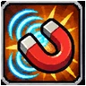
ต่อรองราคา เลเวลสูงสุด 10ซื้อของจากร้าน NPC ถูกลง (สูงสุด 10%)
ต้องเรียนก่อน: ขยายกระเป๋า Lv3
ขายของให้ร้าน NPC ได้ราคาเพิ่ม (สูงสุด 8%)
ต้องเรียนก่อน: ต่อรองราคา Lv3
แบกน้ำหนักได้มากขึ้นเลเวลละ 200
เปิดแผงขายของในเมืองได้ ช่องขาย 2 + เลเวล (3-12 ช่อง)
จอมเวทธาตุ
เรียกพายุหิมะลงพื้นที่ 9x9 ตี 10 ระลอกใน 4.5 วิ ธาตุน้ำ แต่ละระลอกมีโอกาสแช่แข็ง (เลเวลสูง = แรงขึ้น แต่โอกาสแช่แข็งน้อยลง) ร่ายนานมาก
ต้องเรียนก่อน: เยือกแข็ง Lv1, สายฟ้าฟาด Lv3
| Lv | SP | ดาเมจ % | ร่าย (ms) | ร่ายคงที่ (ms) |
|---|---|---|---|---|
| 1 | 78 | 120 | 4500 | 1500 |
| 2 | 78 | 170 | 4700 | 1500 |
| 3 | 78 | 220 | 4900 | 1500 |
| 4 | 78 | 270 | 5100 | 1500 |
| 5 | 78 | 320 | 5300 | 1500 |
| 6 | 78 | 370 | 5500 | 1500 |
| 7 | 78 | 420 | 5700 | 1500 |
| 8 | 78 | 470 | 5900 | 1500 |
| 9 | 78 | 520 | 6100 | 1500 |
| 10 | 78 | 570 | 6300 | 1500 |
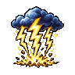
ฟ้าคำราม เลเวลสูงสุด 10 · ธาตุลม · คูลดาวน์ 5 วิสายฟ้าฟาดพื้นที่ 9x9 สี่ระลอก ธาตุลม ร่ายนาน (เลเวลสูงร่ายสั้นลง) ตัวล้างฝูงคู่กับพายุหิมะ
ต้องเรียนก่อน: สายฟ้าฟาด Lv5
| Lv | SP | ดาเมจ % | ร่าย (ms) | ร่ายคงที่ (ms) |
|---|---|---|---|---|
| 1 | 60 | 500 | 6300 | 1500 |
| 2 | 64 | 600 | 6100 | 1500 |
| 3 | 68 | 700 | 5900 | 1500 |
| 4 | 72 | 800 | 5700 | 1500 |
| 5 | 76 | 900 | 5500 | 1500 |
| 6 | 80 | 1000 | 5300 | 1500 |
| 7 | 84 | 1100 | 5100 | 1500 |
| 8 | 88 | 1200 | 4900 | 1500 |
| 9 | 92 | 1300 | 4700 | 1500 |
| 10 | 96 | 1400 | 4500 | 1500 |
ลูกไฟตกสุ่มในวง 7x7 (เลเวลสูง = หลายลูก) ลูกละพื้นที่ 3x3 โดนหลายครั้ง ธาตุไฟ มีโอกาสมึน
ต้องเรียนก่อน:
| Lv | SP | ดาเมจ % | ร่าย (ms) | ร่ายคงที่ (ms) |
|---|---|---|---|---|
| 1 | 20 | 125 | 6300 | 1500 |
| 2 | 24 | 125 | 6300 | 1500 |
| 3 | 30 | 125 | 6300 | 1500 |
| 4 | 34 | 125 | 6300 | 1500 |
| 5 | 40 | 125 | 6300 | 1500 |
| 6 | 44 | 125 | 6300 | 1500 |
| 7 | 50 | 125 | 6300 | 1500 |
| 8 | 54 | 125 | 6300 | 1500 |
| 9 | 60 | 125 | 6300 | 1500 |
| 10 | 64 | 125 | 6300 | 1500 |
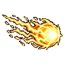
สายฟ้าฟาด เลเวลสูงสุด 10 · ธาตุลมลูกสายฟ้าใส่เป้าเดี่ยว โดนหลายครั้ง (ครั้งละ 100%) ผลักกระเด็น ธาตุลม ตัวเลือกตีบอส/เป้าเดี่ยว
ต้องเรียนก่อน: ลูกวิญญาณระเบิด Lv1, ศรสายฟ้า Lv1
| Lv | SP | ดาเมจ % | ร่าย (ms) | ร่ายคงที่ (ms) |
|---|---|---|---|---|
| 1 | 20 | 100 | 2000 | 500 |
| 2 | 23 | 100 | 2200 | 500 |
| 3 | 26 | 100 | 2400 | 500 |
| 4 | 29 | 100 | 2600 | 500 |
| 5 | 32 | 100 | 2800 | 500 |
| 6 | 35 | 100 | 3000 | 500 |
| 7 | 38 | 100 | 3200 | 500 |
| 8 | 41 | 100 | 3400 | 500 |
| 9 | 44 | 100 | 3600 | 500 |
| 10 | 47 | 100 | 3800 | 500 |
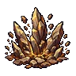
ดินสะเทือน เลเวลสูงสุด 5 · ธาตุดิน · คูลดาวน์ 1 วิพื้นดินระเบิดพื้นที่ 5x5 โดนหลายครั้ง ธาตุดิน ร่ายสั้น ใช้ตอนโดนตีได้
ต้องเรียนก่อน:
| Lv | SP | ดาเมจ % | ร่าย (ms) | ร่ายคงที่ (ms) |
|---|---|---|---|---|
| 1 | 28 | 125 | 1100 | 800 |
| 2 | 32 | 125 | 1300 | 800 |
| 3 | 36 | 125 | 1500 | 800 |
| 4 | 40 | 125 | 1700 | 800 |
| 5 | 44 | 125 | 1900 | 800 |
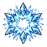
ลมหนาวรอบกาย เลเวลสูงสุด 10 · ธาตุน้ำลมเย็นระเบิดรอบตัว 7x7 ดาเมจเบา แต่มีโอกาสแช่แข็งสูง เอาตัวรอดตอนโดนรุม แล้วค่อยร่ายเวทใหญ่
ต้องเรียนก่อน:
| Lv | SP | ดาเมจ % | ร่าย (ms) | ร่ายคงที่ (ms) |
|---|---|---|---|---|
| 1 | 45 | 110 | 640 | 160 |
| 2 | 43 | 120 | 640 | 160 |
| 3 | 41 | 130 | 576 | 144 |
| 4 | 39 | 140 | 576 | 144 |
| 5 | 37 | 150 | 512 | 128 |
| 6 | 35 | 160 | 512 | 128 |
| 7 | 33 | 170 | 448 | 112 |
| 8 | 31 | 180 | 448 | 112 |
| 9 | 29 | 190 | 384 | 96 |
| 10 | 27 | 200 | 384 | 96 |
เปลี่ยนพื้น 5x5 เป็นโคลน มอนในบึงเดิน/ตีช้าลง อยู่ 5-25 วิ (ไม่มีดาเมจ) กันมอนวิ่งเข้าหาระหว่างร่าย
ต้องเรียนก่อน: ดินสะเทือน Lv1
| Lv | SP | ดาเมจ % |
|---|---|---|
| 1 | 5 | 0 |
| 2 | 10 | 0 |
| 3 | 15 | 0 |
| 4 | 20 | 0 |
| 5 | 25 | 0 |
ขุนศึก
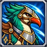
ขี่นก เลเวลสูงสุด 1เปิด/ปิด: ขี่นก เดินเร็วขึ้น 25% แบกของได้มากขึ้น +1,000 / ตีช้าลง (ลดตามสกิลเชี่ยวชาญขี่) / ถือทวนแล้วตีมอนขนาดกลางเต็มแรงเท่ามอนตัวใหญ่ และ เชี่ยวชาญทวนได้ +1 ต่อเลเวล
| Lv | SP | เวลา (ms) |
|---|---|---|
| 1 | 0 | 3600000 |
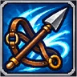
เชี่ยวชาญขี่ เลเวลสูงสุด 5ลดโทษความเร็วตีตอนขี่นก (เริ่มลด 50% ลดเหลือ 10% ต่อเลเวล เลเวล 5 = ไม่ช้าลง)
ต้องเรียนก่อน: ขี่นก Lv1
ฝึกทวนจนชำนาญ ATK เพิ่ม (เฉพาะตอนถือทวน)
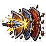
แทงทะลวง เลเวลสูงสุด 10แทงทวนทะลุ จำนวนครั้งตามขนาดมอน (เล็ก 1 กลาง 2 ใหญ่ 3) ต้องถือทวน
ต้องเรียนก่อน: เชี่ยวชาญทวน Lv1
| Lv | SP | ดาเมจ % |
|---|---|---|
| 1 | 7 | 110 |
| 2 | 7 | 120 |
| 3 | 7 | 130 |
| 4 | 7 | 140 |
| 5 | 7 | 150 |
| 6 | 7 | 160 |
| 7 | 7 | 170 |
| 8 | 7 | 180 |
| 9 | 7 | 190 |
| 10 | 7 | 200 |
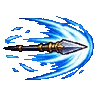
แทงกวาดแนว เลเวลสูงสุด 10แทงทวนเป็นแนวยาว 4 ช่อง ทุกตัวในแนวโดน กระเด็นถอย ต้องถือทวน
ต้องเรียนก่อน: แทงทะลวง Lv5
| Lv | SP | ดาเมจ % |
|---|---|---|
| 1 | 9 | 120 |
| 2 | 9 | 140 |
| 3 | 9 | 160 |
| 4 | 9 | 180 |
| 5 | 9 | 200 |
| 6 | 9 | 220 |
| 7 | 9 | 240 |
| 8 | 9 | 260 |
| 9 | 9 | 280 |
| 10 | 9 | 300 |
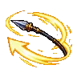
ทวนบูมเมอแรง เลเวลสูงสุด 5ขว้างทวนใส่เป้าไกล แล้วทวนกลับมือ ตีไกลอย่างเดียวของอัศวิน ต้องถือทวน
ต้องเรียนก่อน: แทงทะลวง Lv3
| Lv | SP | ดาเมจ % |
|---|---|---|
| 1 | 10 | 150 |
| 2 | 10 | 200 |
| 3 | 10 | 250 |
| 4 | 10 | 300 |
| 5 | 10 | 350 |
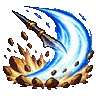
กวาดทวน เลเวลสูงสุด 10 · คูลดาวน์ 1 วิกวาดทวนเป็นวงหน้าตัว ทุกตัวรอบเป้า 2 ช่องโดน กระเด็นถอย ต้องถือทวน
ต้องเรียนก่อน: แทงกวาดแนว Lv3
| Lv | SP | ดาเมจ % | ร่ายคงที่ (ms) |
|---|---|---|---|
| 1 | 24 | 500 | 350 |
| 2 | 24 | 600 | 350 |
| 3 | 24 | 700 | 350 |
| 4 | 24 | 800 | 350 |
| 5 | 24 | 900 | 350 |
| 6 | 24 | 1000 | 350 |
| 7 | 24 | 1100 | 350 |
| 8 | 24 | 1200 | 350 |
| 9 | 24 | 1300 | 350 |
| 10 | 24 | 1400 | 350 |
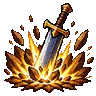
ฟาดกระแทก เลเวลสูงสุด 10 · คูลดาวน์ 1 วิฟาดหนัก 2 ครั้ง กระแทกทุกตัวรอบเป้า 1 ช่อง กระเด็นไปชนตัวอื่น ตัวล้างฝูงของอัศวิน ใช้ได้ทุกอาวุธ
ต้องเรียนก่อน: ฟันหนัก Lv10, ระเบิดเพลิงดาบ Lv3, เชี่ยวชาญดาบสองมือ Lv5, เร่งดาบสองมือ Lv10, ตั้งท่าสวน Lv5
| Lv | SP | ดาเมจ % | ร่ายคงที่ (ms) |
|---|---|---|---|
| 1 | 13 | 140 | 350 |
| 2 | 14 | 180 | 350 |
| 3 | 15 | 220 | 350 |
| 4 | 16 | 260 | 350 |
| 5 | 17 | 300 | 350 |
| 6 | 18 | 340 | 350 |
| 7 | 19 | 380 | 350 |
| 8 | 20 | 420 | 350 |
| 9 | 21 | 460 | 350 |
| 10 | 22 | 500 | 350 |
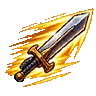
เร่งดาบสองมือ เลเวลสูงสุด 10ตีเร็วขึ้นมาก (เฉพาะดาบสองมือ) นาน 1-5 นาที
ต้องเรียนก่อน: เชี่ยวชาญดาบสองมือ Lv1
| Lv | SP | เวลา (ms) |
|---|---|---|
| 1 | 14 | 30000 |
| 2 | 18 | 60000 |
| 3 | 22 | 90000 |
| 4 | 26 | 120000 |
| 5 | 30 | 150000 |
| 6 | 34 | 180000 |
| 7 | 38 | 210000 |
| 8 | 42 | 240000 |
| 9 | 46 | 270000 |
| 10 | 50 | 300000 |
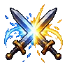
ตั้งท่าสวน เลเวลสูงสุด 5ตั้งท่าสั้นๆ ครั้งถัดไปที่มอนตีประชิดเข้ามา = ปัดแล้วสวนคริแน่นอน (ไม่เสียเลือด) ใช้กดเองจังหวะบอส
ต้องเรียนก่อน: เชี่ยวชาญดาบสองมือ Lv1
| Lv | SP | เวลา (ms) |
|---|---|---|
| 1 | 3 | 400 |
| 2 | 3 | 800 |
| 3 | 3 | 1200 |
| 4 | 3 | 1600 |
| 5 | 3 | 2000 |
พุ่งเข้าหาเป้าไกลสุด 9 ช่องแล้วแทงแรง 700% ยิ่งไกลยิ่งแรง (+100% ทุก 3 ช่อง) ผลักถอย
ต้องเรียนก่อน:
| Lv | SP | ดาเมจ % |
|---|---|---|
| 1 | 40 | 700 |
บาทหลวงแสง
วงแสงบนพื้น 5x5 ฮีลตัวเองและเพื่อนในวงทุกวินาที (% HP สูงสุด) ผีดิบ/ปีศาจในวงโดนแสง อยู่ 7-31 วิ
ต้องเรียนก่อน: ฮีล Lv1
| Lv | SP | ดาเมจ % | ร่าย (ms) | ร่ายคงที่ (ms) |
|---|---|---|---|---|
| 1 | 15 | 50 | 4000 | 1000 |
| 2 | 18 | 50 | 4000 | 1000 |
| 3 | 21 | 50 | 4000 | 1000 |
| 4 | 24 | 50 | 4000 | 1000 |
| 5 | 27 | 50 | 4000 | 1000 |
| 6 | 30 | 50 | 4000 | 1000 |
| 7 | 33 | 50 | 4000 | 1000 |
| 8 | 36 | 50 | 4000 | 1000 |
| 9 | 39 | 50 | 4000 | 1000 |
| 10 | 42 | 50 | 4000 | 1000 |
โล่แสงให้ 1 คน (กดแล้วคลิกตัวคน หรือชื่อในหน้าต่างปาร์ตี้ ระยะ 9 ช่อง) กันดาเมจตามจำนวนครั้ง/HP สูงสุด
ต้องเรียนก่อน: พรคุ้มกาย Lv2
| Lv | SP | ร่าย (ms) | ร่ายคงที่ (ms) | เวลา (ms) |
|---|---|---|---|---|
| 1 | 20 | 1600 | 400 | 120000 |
| 2 | 20 | 1600 | 400 | 120000 |
| 3 | 20 | 1600 | 400 | 120000 |
| 4 | 25 | 1600 | 400 | 120000 |
| 5 | 25 | 1600 | 400 | 120000 |
| 6 | 25 | 1600 | 400 | 120000 |
| 7 | 30 | 1600 | 400 | 120000 |
| 8 | 30 | 1600 | 400 | 120000 |
| 9 | 30 | 1600 | 400 | 120000 |
| 10 | 35 | 1600 | 400 | 120000 |
สวดภาวนา SP ทั้งปาร์ตี้ในระยะฟื้นเร็วขึ้น 2 เท่า 30-90 วิ (หัวใจของปาร์ตี้สายเวท)
ต้องเรียนก่อน:
| Lv | SP | ร่าย (ms) | ร่ายคงที่ (ms) | เวลา (ms) |
|---|---|---|---|---|
| 1 | 40 | 3200 | 800 | 30000 |
| 2 | 40 | 3200 | 800 | 45000 |
| 3 | 40 | 3200 | 800 | 60000 |
| 4 | 40 | 3200 | 800 | 75000 |
| 5 | 40 | 3200 | 800 | 90000 |
เพลงสรรเสริญ LUK +30 ทั้งปาร์ตี้ (คริ หลบ ต้านคำสาป)
ต้องเรียนก่อน: โล่ศรัทธา Lv4, สวดเร่ง SP Lv3
| Lv | SP | เวลา (ms) |
|---|---|---|
| 1 | 20 | 10000 |
| 2 | 20 | 15000 |
| 3 | 20 | 20000 |
| 4 | 20 | 25000 |
| 5 | 20 | 30000 |
ATK และ MATK +5-25 ทั้งปาร์ตี้ นาน 2 นาที
ต้องเรียนก่อน:
| Lv | SP | ร่าย (ms) | ร่ายคงที่ (ms) | เวลา (ms) |
|---|---|---|---|---|
| 1 | 59 | 1000 | 500 | 120000 |
| 2 | 62 | 1000 | 500 | 120000 |
| 3 | 65 | 1000 | 500 | 120000 |
| 4 | 68 | 1000 | 500 | 120000 |
| 5 | 71 | 1000 | 500 | 120000 |
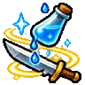
น้ำมนต์ เลเวลสูงสุด 5ประพรมน้ำมนต์ที่อาวุธ การตีกายภาพเป็นธาตุแสง (แรงกับผีดิบ/ปีศาจ) 1-3 นาที คู่กับสายบู๊
ต้องเรียนก่อน: มือประทานพลัง Lv3
| Lv | SP | เวลา (ms) |
|---|---|---|
| 1 | 14 | 60000 |
| 2 | 18 | 90000 |
| 3 | 22 | 120000 |
| 4 | 26 | 150000 |
| 5 | 30 | 180000 |
ชุบเพื่อนในปาร์ตี้ที่หมดสติในระยะ ฟื้นพร้อม HP 10-80%
ต้องเรียนก่อน:
| Lv | SP | ร่าย (ms) | ร่ายคงที่ (ms) |
|---|---|---|---|
| 1 | 60 | 4800 | 1200 |
| 2 | 60 | 3200 | 800 |
| 3 | 60 | 1600 | 400 |
| 4 | 60 | 0 | 0 |
แสงศักดิ์สิทธิ์ใส่มอนธาตุอมตะ มีโอกาสสลายทันที (ยิ่งเลือดน้อยยิ่งง่าย บอสไม่ได้) ไม่สลาย = ดาเมจแสง
ต้องเรียนก่อน: ชุบชีวิต Lv1
| Lv | SP | ดาเมจ % | ร่าย (ms) | ร่ายคงที่ (ms) |
|---|---|---|---|---|
| 1 | 20 | 100 | 800 | 200 |
| 2 | 20 | 200 | 800 | 200 |
| 3 | 20 | 300 | 800 | 200 |
| 4 | 20 | 400 | 800 | 200 |
| 5 | 20 | 500 | 800 | 200 |
| 6 | 20 | 600 | 800 | 200 |
| 7 | 20 | 700 | 800 | 200 |
| 8 | 20 | 800 | 800 | 200 |
| 9 | 20 | 900 | 800 | 200 |
| 10 | 20 | 1000 | 800 | 200 |
วงไม้กางเขนแสง 7x7 ตีหลายระลอกเฉพาะผีดิบ/ปีศาจ ธาตุแสง ตัวฟาร์มแมพผีของบาทหลวง
ต้องเรียนก่อน: จารึกนิรันดร์ Lv1, ไล่ผี Lv3
| Lv | SP | ดาเมจ % | ร่าย (ms) | ร่ายคงที่ (ms) |
|---|---|---|---|---|
| 1 | 40 | 100 | 4000 | 1000 |
| 2 | 42 | 100 | 4000 | 1000 |
| 3 | 44 | 100 | 4000 | 1000 |
| 4 | 46 | 100 | 4000 | 1000 |
| 5 | 48 | 100 | 4000 | 1000 |
| 6 | 50 | 100 | 4000 | 1000 |
| 7 | 52 | 100 | 4000 | 1000 |
| 8 | 54 | 100 | 4000 | 1000 |
| 9 | 56 | 100 | 4000 | 1000 |
| 10 | 58 | 100 | 4000 | 1000 |
จารึกมอน 1 ตัว ดาเมจครั้งถัดไปที่มันโดน (จากใครก็ได้) x2 ใช้ก่อนเพื่อนปล่อยท่าใหญ่
ต้องเรียนก่อน:
| Lv | SP | ดาเมจ % |
|---|---|---|
| 1 | 10 | 0 |
ATK เพิ่ม (เฉพาะตอนถือกระบอง/คทา) สายบู๊
พรานเหยี่ยว
ได้นกคู่ตัว ตีธรรมดามีโอกาสนกโฉบเอง (LUK x 0.3 %) ต้องมีถึงใช้นกโฉบได้
ต้องเรียนก่อน: ล่าสัตว์ Lv1
สั่งนกโฉบเป้าและรอบตัว 1 ช่อง 1-5 ครั้ง ดาเมจคงที่ (เลเวล x20 + เล็บเหล็ก + AGI + DEX/5) ไม่สนเกราะ ไม่พลาด
ต้องเรียนก่อน: ฝึกนก Lv1
| Lv | SP | ดาเมจ % | ร่าย (ms) | ร่ายคงที่ (ms) |
|---|---|---|---|---|
| 1 | 10 | 100 | 800 | 200 |
| 2 | 13 | 100 | 800 | 200 |
| 3 | 16 | 100 | 800 | 200 |
| 4 | 19 | 100 | 800 | 200 |
| 5 | 22 | 100 | 800 | 200 |
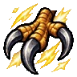
เล็บเหล็ก เลเวลสูงสุด 10นกแรงขึ้น +12 ต่อเลเวลทุกครั้งที่โฉบ
ต้องเรียนก่อน: นกโฉบ Lv5
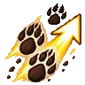
ล่าสัตว์ เลเวลสูงสุด 10ATK เพิ่มเมื่อตีมอนเผ่าสัตว์และแมลง
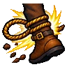
กับดักบ่วง เลเวลสูงสุด 5วางบ่วงที่จุดเป้า มอนเหยียบโดนตรึง 4-20 วิ (บอสสั้นลง 5 เท่า)
ต้องเรียนก่อน:
| Lv | SP | ดาเมจ % |
|---|---|---|
| 1 | 12 | 0 |
| 2 | 12 | 0 |
| 3 | 12 | 0 |
| 4 | 12 | 0 |
| 5 | 12 | 0 |
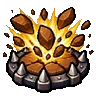
กับดักหินระเบิด เลเวลสูงสุด 5 · ธาตุดินกับดักธาตุดิน เหยียบแล้วระเบิด (ดาเมจกับดัก) มีโอกาสมึน
ต้องเรียนก่อน:
| Lv | SP | ดาเมจ % | ร่าย (ms) | ร่ายคงที่ (ms) |
|---|---|---|---|---|
| 1 | 10 | 100 | 500 | 300 |
| 2 | 10 | 100 | 500 | 300 |
| 3 | 10 | 100 | 500 | 300 |
| 4 | 10 | 100 | 500 | 300 |
| 5 | 10 | 100 | 500 | 300 |
กับดักธาตุลม ระเบิดโดนรอบ 1 ช่อง
ต้องเรียนก่อน: กับดักหินระเบิด Lv1, กับดักน้ำแข็ง Lv1
| Lv | SP | ดาเมจ % | ร่าย (ms) | ร่ายคงที่ (ms) |
|---|---|---|---|---|
| 1 | 10 | 100 | 500 | 300 |
| 2 | 10 | 100 | 500 | 300 |
| 3 | 10 | 100 | 500 | 300 |
| 4 | 10 | 100 | 500 | 300 |
| 5 | 10 | 100 | 500 | 300 |
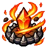
กับดักเพลิง เลเวลสูงสุด 5 · ธาตุไฟกับดักธาตุไฟ ระเบิดใหญ่รอบ 2 ช่อง ตัวล้างฝูงของพราน
ต้องเรียนก่อน: กับดักลมแตก Lv1
| Lv | SP | ดาเมจ % | ร่าย (ms) | ร่ายคงที่ (ms) |
|---|---|---|---|---|
| 1 | 15 | 100 | 500 | 300 |
| 2 | 15 | 100 | 500 | 300 |
| 3 | 15 | 100 | 500 | 300 |
| 4 | 15 | 100 | 500 | 300 |
| 5 | 15 | 100 | 500 | 300 |
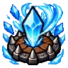
กับดักน้ำแข็ง เลเวลสูงสุด 5 · ธาตุน้ำกับดักธาตุน้ำ โดนรอบ 1 ช่อง แช่แข็งแน่นอน 3-15 วิ
ต้องเรียนก่อน:
| Lv | SP | ดาเมจ % |
|---|---|---|
| 1 | 10 | 100 |
| 2 | 10 | 100 |
| 3 | 10 | 100 |
| 4 | 10 | 100 |
| 5 | 10 | 100 |
มือสังหารเงา
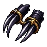
เชี่ยวชาญกรงเล็บ เลเวลสูงสุด 10ฝึกกรงเล็บจนชำนาญ ATK เพิ่ม (เฉพาะตอนถือกรงเล็บ) / กรงเล็บ: โอกาสคริ x2 และตีธรรมดาได้ดาเมจมือซ้ายเพิ่มตามเลเวลตีสองครั้ง
ฟันรัวด้วยกรงเล็บใส่เป้าเดียว แรงมาก เป้าเลือดต่ำกว่าครึ่ง = แรงขึ้นอีกครึ่งหนึ่ง มีโอกาสมึน ท่าปิดงานของนักฆ่า
ต้องเรียนก่อน: เชี่ยวชาญกรงเล็บ Lv4
| Lv | SP | ดาเมจ % |
|---|---|---|
| 1 | 16 | 300 |
| 2 | 18 | 400 |
| 3 | 20 | 500 |
| 4 | 22 | 600 |
| 5 | 24 | 700 |
| 6 | 26 | 800 |
| 7 | 28 | 900 |
| 8 | 30 | 1000 |
| 9 | 32 | 1100 |
| 10 | 34 | 1200 |
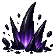
เขี้ยวเงา เลเวลสูงสุด 5ใช้ได้ตอนล่องหนเท่านั้น (ไม่หลุดล่องหน) แทงเงาจากระยะไกลใส่เป้าและรอบตัว 1 ช่อง มอนที่โดนช้าลง ตัวตีหมู่ของนักฆ่า
ต้องเรียนก่อน: ล่องหนเดิน Lv2, ฟันรัวเงา Lv5
| Lv | SP | ดาเมจ % |
|---|---|---|
| 1 | 3 | 120 |
| 2 | 3 | 140 |
| 3 | 3 | 160 |
| 4 | 3 | 180 |
| 5 | 3 | 200 |
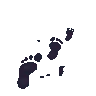
ล่องหนเดิน เลเวลสูงสุด 10ล่องหนแบบเดินได้ มอนมองไม่เห็นและเลิกไล่ (มอนที่เห็นคนซ่อนยังเห็น) ตีหรือใช้สกิลอื่น = หลุด (เขี้ยวเงาไม่หลุด) / กดซ้ำ = ออกเอง
ต้องเรียนก่อน: ล่องหน Lv2
| Lv | SP | เวลา (ms) |
|---|---|---|
| 1 | 15 | 3600000 |
| 2 | 15 | 3600000 |
| 3 | 15 | 3600000 |
| 4 | 15 | 3600000 |
| 5 | 15 | 3600000 |
| 6 | 15 | 3600000 |
| 7 | 15 | 3600000 |
| 8 | 15 | 3600000 |
| 9 | 15 | 3600000 |
| 10 | 15 | 3600000 |
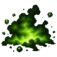
ฝุ่นพิษ เลเวลสูงสุด 10 · ธาตุพิษโปรยฝุ่นพิษเป็นวง 3x3 บนพื้น มอนในวงติดพิษ 18 วิ (เลือดลดทุกวินาที DEF ลด 25%) นาน 10-50 วิ
ต้องเรียนก่อน: ทาพิษ Lv5
| Lv | SP | ดาเมจ % |
|---|---|---|
| 1 | 20 | 20 |
| 2 | 20 | 20 |
| 3 | 20 | 20 |
| 4 | 20 | 20 |
| 5 | 20 | 20 |
| 6 | 20 | 20 |
| 7 | 20 | 20 |
| 8 | 20 | 20 |
| 9 | 20 | 20 |
| 10 | 20 | 20 |
ติดระเบิดพิษที่เป้า ระเบิดหลัง 10-2 วิ ตีรอบตัวเป้า 2 ช่องแรงมาก (ตัวล้างฝูงแบบหน่วงของนักฆ่า)
ต้องเรียนก่อน: ฝุ่นพิษ Lv5
| Lv | SP | ดาเมจ % | ร่าย (ms) | ร่ายคงที่ (ms) |
|---|---|---|---|---|
| 1 | 12 | 500 | 500 | 500 |
| 2 | 14 | 600 | 500 | 500 |
| 3 | 16 | 700 | 500 | 500 |
| 4 | 18 | 800 | 500 | 500 |
| 5 | 20 | 900 | 500 | 500 |
| 6 | 22 | 1000 | 500 | 500 |
| 7 | 24 | 1100 | 500 | 500 |
| 8 | 26 | 1200 | 500 | 500 |
| 9 | 28 | 1300 | 500 | 500 |
| 10 | 30 | 1400 | 500 | 500 |
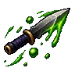
ปามีดพิษ เลเวลสูงสุด 1ปามีดอาบพิษใส่เป้าไกล 9 ช่อง แรง + ติดพิษ ตีไกลอย่างเดียวของนักฆ่า
ต้องเรียนก่อน:
| Lv | SP | ดาเมจ % |
|---|---|---|
| 1 | 35 | 500 |
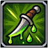
ทาพิษ เลเวลสูงสุด 10ทาพิษที่อาวุธ: ตีเป็นธาตุพิษ และการตีกายภาพมีโอกาส 3-7.5% ทำให้ศัตรูติดพิษ 10-100 วิ (บัฟ 30-165 วิ)
ต้องเรียนก่อน: แทงพิษ Lv1
| Lv | SP | เวลา (ms) |
|---|---|---|
| 1 | 20 | 30000 |
| 2 | 20 | 45000 |
| 3 | 20 | 60000 |
| 4 | 20 | 75000 |
| 5 | 20 | 90000 |
| 6 | 20 | 105000 |
| 7 | 20 | 120000 |
| 8 | 20 | 135000 |
| 9 | 20 | 150000 |
| 10 | 20 | 165000 |
ช่างเหล็กศึก
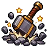
ทุบพื้น เลเวลสูงสุด 5ทุบพื้นรอบตัว 2 ช่อง ไม่มีดาเมจ มอนมีโอกาสมึน คุมฝูงให้ปาร์ตี้
ต้องเรียนก่อน:
| Lv | SP |
|---|---|
| 1 | 10 |
| 2 | 10 |
| 3 | 10 |
| 4 | 10 |
| 5 | 10 |
ตีเร็วขึ้นมาก + HIT เพิ่ม ทั้งปาร์ตี้ที่ถือขวาน/กระบอง (ตัวเองต้องถือขวาน/กระบอง) นาน 30-150 วิ
ต้องเรียนก่อน: ทุบพื้น Lv2
| Lv | SP | เวลา (ms) |
|---|---|---|
| 1 | 20 | 30000 |
| 2 | 23 | 60000 |
| 3 | 26 | 90000 |
| 4 | 29 | 120000 |
| 5 | 32 | 150000 |
ATK +5-25% ตัวเอง / เพื่อนในปาร์ตี้ +5-15% นาน 20-100 วิ
ต้องเรียนก่อน: เลือดสูบฉีด Lv3
| Lv | SP | เวลา (ms) |
|---|---|---|
| 1 | 18 | 20000 |
| 2 | 16 | 40000 |
| 3 | 14 | 60000 |
| 4 | 12 | 80000 |
| 5 | 10 | 100000 |
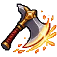
ตีเต็มแรง เลเวลสูงสุด 5เปิด/ปิด: ATK อาวุธออกค่าสูงสุดทุกครั้ง หัก SP 1 ทุก 1-5 วิ (SP หมด = ปิด)
ต้องเรียนก่อน: แรงตอก Lv2, อาวุธสมบูรณ์แบบ Lv3
| Lv | SP | เวลา (ms) |
|---|---|---|
| 1 | 10 | 3600000 |
| 2 | 10 | 3600000 |
| 3 | 10 | 3600000 |
| 4 | 10 | 3600000 |
| 5 | 10 | 3600000 |
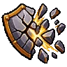
ทุบเกราะ เลเวลสูงสุด 10 · คูลดาวน์ 3 วิทุบเกราะเป้า DEF ลด 10-50% นาน 15 วิ (บอสลดครึ่งเดียว) ทั้งปาร์ตี้ตีเข้าขึ้น (สกิลของ Arkhelm)
ต้องเรียนก่อน: แรงตอก Lv1
| Lv | SP | ดาเมจ % |
|---|---|---|
| 1 | 11 | 125 |
| 2 | 12 | 150 |
| 3 | 13 | 175 |
| 4 | 14 | 200 |
| 5 | 15 | 225 |
| 6 | 16 | 250 |
| 7 | 17 | 275 |
| 8 | 18 | 300 |
| 9 | 19 | 325 |
| 10 | 20 | 350 |
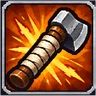
ผูกด้ามอาวุธ เลเวลสูงสุด 1ATK +4 ติดตัว (และ STR +1)
ลดดาเมจธาตุไร้ธาตุ 1% และธาตุไฟ 4% ต่อเลเวล
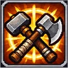
อาวุธสมบูรณ์แบบ เลเวลสูงสุด 5ตีไม่โดนโทษขนาดมอน (อาวุธไม่ลดดาเมจตามขนาดตัวมอน) ทั้งปาร์ตี้ นาน 10-50 วิ
ต้องเรียนก่อน: วิจัยอาวุธ Lv2, เลือดสูบฉีด Lv2
| Lv | SP | เวลา (ms) |
|---|---|---|
| 1 | 18 | 10000 |
| 2 | 16 | 20000 |
| 3 | 14 | 30000 |
| 4 | 12 | 40000 |
| 5 | 10 | 50000 |
เหมือนเลือดสูบฉีดแต่ใช้ได้กับทุกอาวุธ ตีเร็ว + HIT ทั้งปาร์ตี้ นาน 150 วิ (ไม่ซ้อนกับเลือดสูบฉีดธรรมดา)
ต้องเรียนก่อน: เลือดสูบฉีด Lv5
| Lv | SP | เวลา (ms) |
|---|---|---|
| 1 | 64 | 150000 |
เก็บของที่ตกอยู่รอบตัว 5x5 ช่องทันที Auto เก็บของเองอยู่แล้ว ตัวนี้ไว้ใช้ตอนเล่นมือ
ต้องเรียนก่อน:
| Lv | SP |
|---|---|
| 1 | 10 |
ATK +2 ต่อเลเวลทุกอาวุธ และโอกาสตีโดนเพิ่ม 2% ต่อเลเวล
ต้องเรียนก่อน: ผูกด้ามอาวุธ Lv1